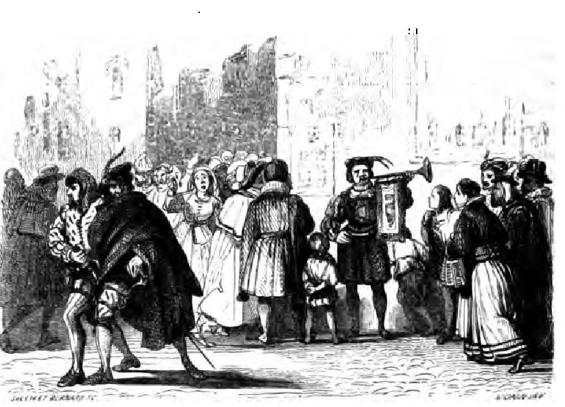
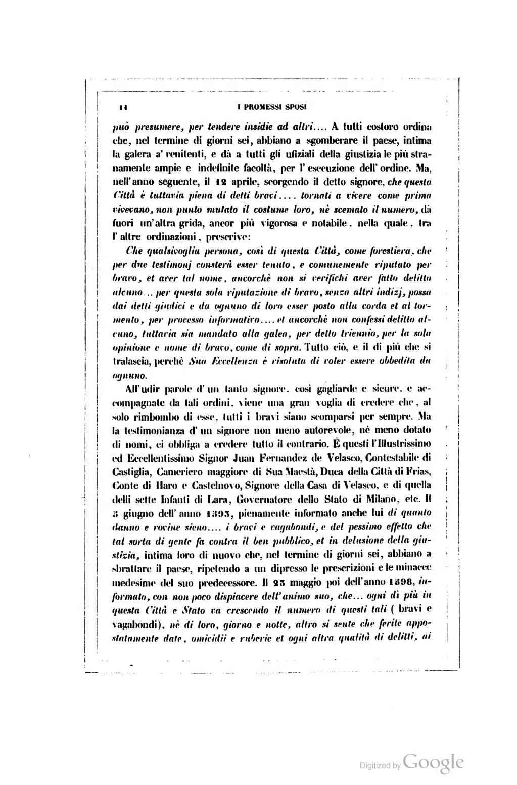
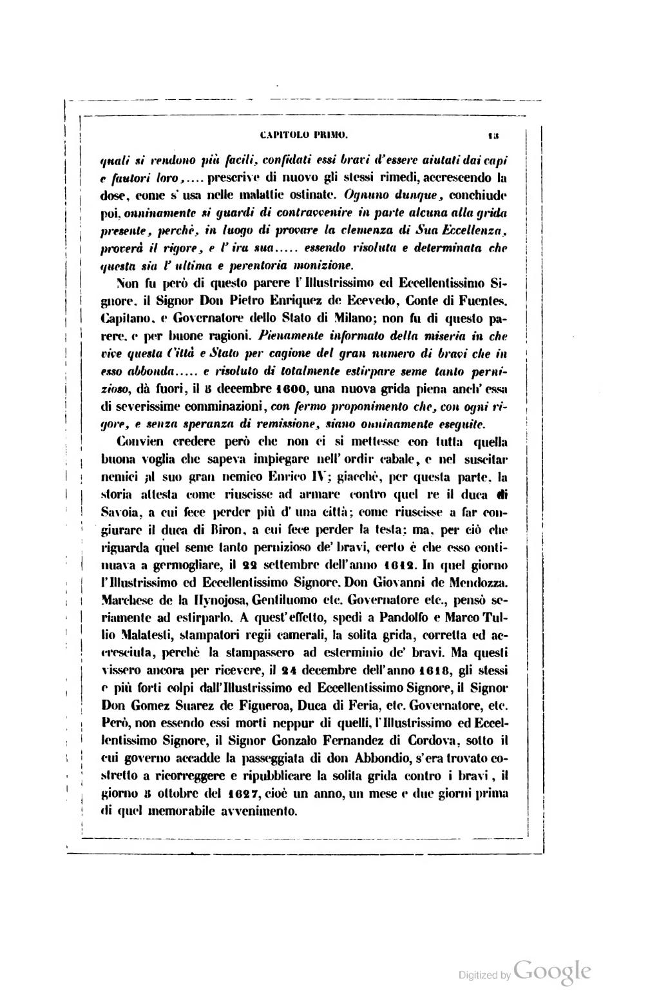
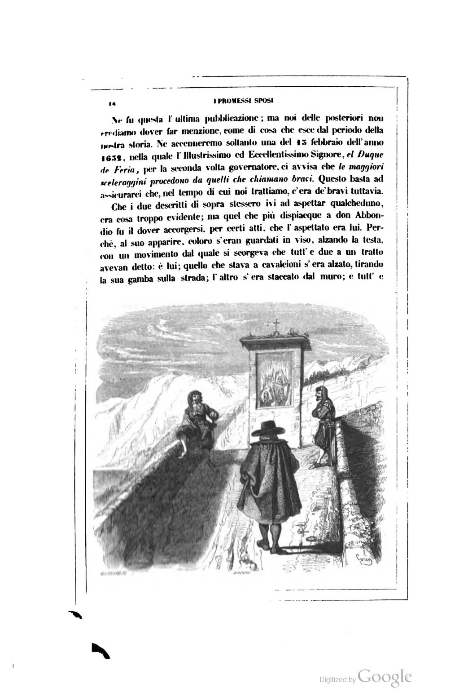
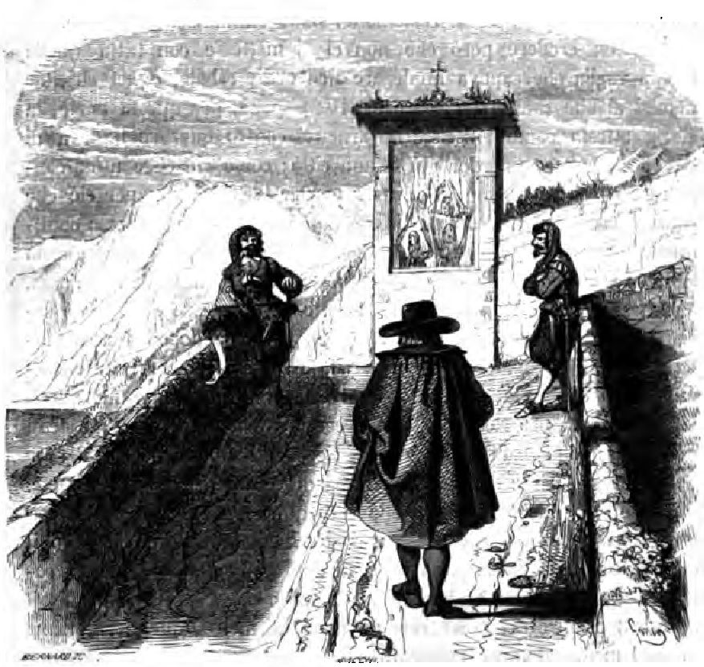
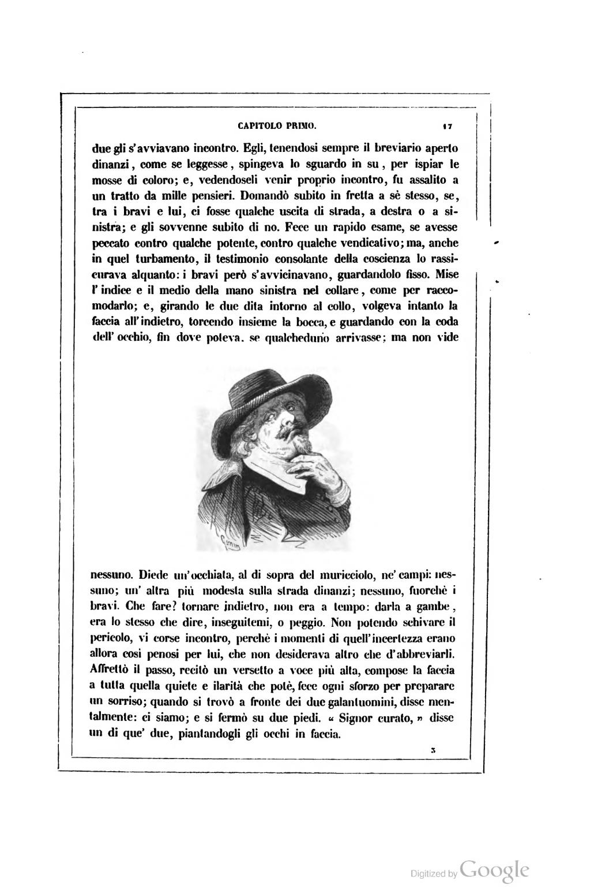
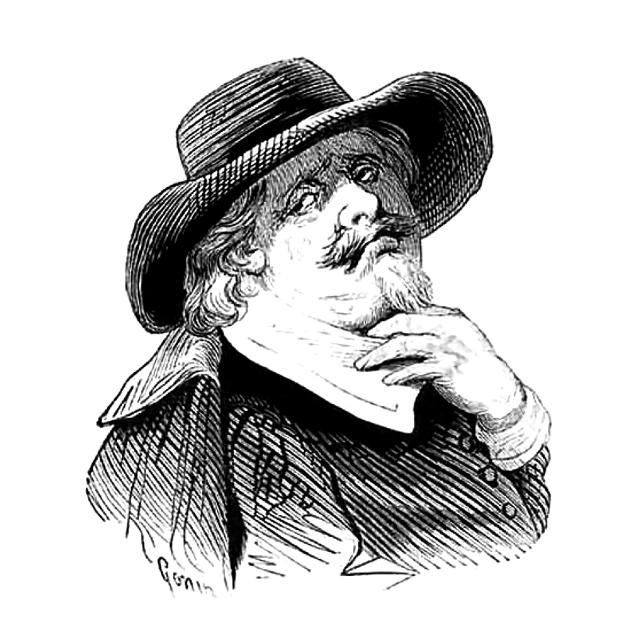
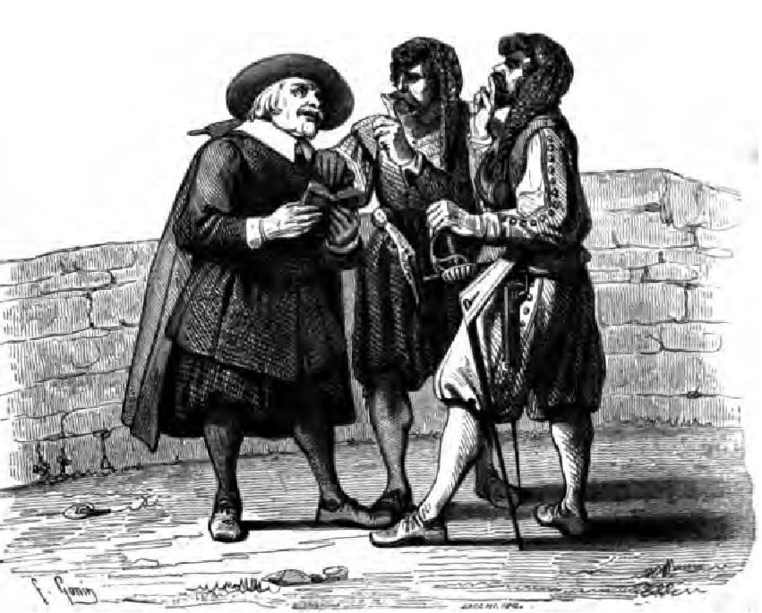

Scuola estiva CAD 2019, Verona. CC-BY
Alessandro Manzoni, I Promessi Sposi, Milano: Guglielmini E. Redaelli, 1840 WikisourceFino dall’otto aprile dell’anno 1583, l’Illustrissimo ed Eccellentissimo signor don Carlo d’Aragon, Principe di Castelvetrano, Duca di Terranuova, Marchese d’Avola, Conte di Burgeto, grande Ammiraglio, e gran Contestabile di Sicilia, Governatore di Milano e Capitan Generale di Sua Maestà Cattolica in Italia, pienamente informato della intollerabile miseria in che è vivuta e vive questa Città di Milano, per cagione dei bravi e vagabondi, pubblica un bando contro di essi.  Dichiara e diffinisce tutti coloro essere compresi in questo bando, e doversi ritenere bravi e vagabondi... i quali, essendo forestieri o del paese, non hanno esercizio alcuno, od avendolo, non lo fanno... ma, senza salario, o pur con esso, s’appoggiano a qualche cavaliere o gentiluomo, officiale o mercante... per fargli spalle e favore, o veramente, come si può presumere, per tendere insidie ad altri... A tutti costoro ordina che, nel termine di giorni sei, abbiano a sgomberare il paese, intima la galera a’ renitenti, e dà a tutti gli ufiziali della giustizia le più stranamente ampie e indefinite facoltà, per l’esecuzione dell’ordine. Ma, nell’anno seguente, il 12 aprile, scorgendo il detto signore, che questa Città è tuttavia piena di detti bravi... tornati a vivere come prima vivevano, non punto mutato il costume loro, né scemato il numero, dà fuori un’altra grida, ancor più vigorosa e notabile, nella quale, tra l’altre ordinazioni, prescrive:
Che qualsivoglia persona, così di questa Città  Milano, come forestiera, che per due testimonj consterà esser
tenuto, e comunemente riputato per bravo, et aver tal nome, ancorché non si verifichi
aver fatto delitto
alcuno... per questa sola riputazione di bravo, senza altri indizj, possa dai detti
giudici e da ognuno
di loro esser posto alla corda et al tormento, per processo informativo... et ancorché
non confessi delitto
alcuno, tuttavia sia mandato alla galea, per detto triennio, per la sola opinione
e nome di bravo, come di
sopra.Tutto ciò, e il di più che si tralascia, perché Sua Eccellenza
Milano, come forestiera, che per due testimonj consterà esser
tenuto, e comunemente riputato per bravo, et aver tal nome, ancorché non si verifichi
aver fatto delitto
alcuno... per questa sola riputazione di bravo, senza altri indizj, possa dai detti
giudici e da ognuno
di loro esser posto alla corda et al tormento, per processo informativo... et ancorché
non confessi delitto
alcuno, tuttavia sia mandato alla galea, per detto triennio, per la sola opinione
e nome di bravo, come di
sopra.Tutto ciò, e il di più che si tralascia, perché Sua Eccellenza  don Carlo d’Aragon è risoluta di voler essere obbedita
da ognuno.
don Carlo d’Aragon è risoluta di voler essere obbedita
da ognuno.
Che qualsivoglia persona, così di questa Città  Milano, come forestiera, che per due testimonj consterà
esser tenuto, e comunemente riputato per bravo, et aver tal nome, ancorché non si
verifichi aver
fatto delitto alcuno... per questa sola riputazione di bravo, senza altri indizj,
possa dai detti
giudici e da ognuno di loro esser posto alla corda et al tormento, per processo informativo...
et
ancorché non confessi delitto alcuno, tuttavia sia mandato alla galea, per detto triennio,
per la
sola opinione e nome di bravo, come di sopra. Tutto ciò, e il di più che si tralascia,
perché Sua
Eccellenza è risoluta di voler essere obbedita da ognuno.
Milano, come forestiera, che per due testimonj consterà
esser tenuto, e comunemente riputato per bravo, et aver tal nome, ancorché non si
verifichi aver
fatto delitto alcuno... per questa sola riputazione di bravo, senza altri indizj,
possa dai detti
giudici e da ognuno di loro esser posto alla corda et al tormento, per processo informativo...
et
ancorché non confessi delitto alcuno, tuttavia sia mandato alla galea, per detto triennio,
per la
sola opinione e nome di bravo, come di sopra. Tutto ciò, e il di più che si tralascia,
perché Sua
Eccellenza è risoluta di voler essere obbedita da ognuno.
All’udir parole d’un tanto signore, così gagliarde e sicure, e accompagnate da tali ordini, viene una gran voglia di credere che, al solo rimbombo di esse, tutti i bravi siano scomparsi per sempre. Ma la testimonianza d’un signore non meno autorevole, né meno dotato di nomi, ci obbliga a credere tutto il contrario. È questi l’Illustrissimo ed Eccellentissimo Signor Juan Fernandez de Velasco, Contestabile di Castiglia, Cameriero maggiore di Sua Maestà, Duca della Città di Frias, Conte di Haro e Castelnovo, Signore della Casa di Velasco, e di quella delli sette Infanti di Lara, Governatore dello Stato di Milano, etc. Il 5 giugno dell’anno 1593, pienamente informato anche lui di quanto danno e rovine sieno... i bravi e vagabondi, e del pessimo effetto che tal sorta di gente, fa contra il ben pubblico, et in delusione della giustizia, intima loro di nuovo che, nel termine di giorni sei, abbiano a sbrattare il paese, ripetendo a un dipresso le prescrizioni e le minacce medesime del suo predecessore. Il 23 maggio poi dell’anno 1598, informato, con non poco dispiacere dell’animo suo, che... ogni dì più in questa Città e Stato va crescendo il numero di questi tali (bravi e vagabondi), né di loro, giorno e notte, altro si sente che ferite appostatamente date, omicidii e ruberie et ogni altra qualità di delitti, ai  quali si rendono più facili, confidati essi bravi d’essere aiutati dai capi e fautori loro... prescrive di nuovo gli stessi rimedi, accrescendo la dose, come s’usa nelle malattie ostinate. Ognuno dunque, conchiude poi, onninamente si guardi di contravvenire in parte alcuna alla grida presente, perché, in luogo di provare la clemenza di Sua Eccellenza, proverà il rigore, e l’ira sua... essendo risoluta e determinata che questa sia l’ultima e perentoria monizione.
Non fu però di questo parere l’Illustrissimo ed Eccellentissimo Signore, il Signor
Don Pietro
Enriquez de Acevedo, Conte di Fuentes, Capitano, e Governatore dello Stato di Milano; non fu di
questo parere, e per buone ragioni. Pienamente informato della miseria in che vive questa Città e
Stato  Milano per cagione del gran numero di bravi che in esso abbonda... e risoluto di totalmente
estirpare
seme tanto pernizioso, dà fuori, il 5 decembre 1600, una nuova grida piena anch’essa di severissime
comminazioni, con fermo proponimento che, con ogni rigore, e senza speranza di remissione, siano
onninamente eseguite.
Milano per cagione del gran numero di bravi che in esso abbonda... e risoluto di totalmente
estirpare
seme tanto pernizioso, dà fuori, il 5 decembre 1600, una nuova grida piena anch’essa di severissime
comminazioni, con fermo proponimento che, con ogni rigore, e senza speranza di remissione, siano
onninamente eseguite.
Convien credere però che non ci si mettesse con tutta quella buona voglia che sapeva impiegare nell’ordir cabale 6, e nel suscitar nemici al suo gran nemico Enrico IV; giacché, per questa parte, la storia attesta come riuscisse ad armare contro quel re il duca di Savoia, a cui fece perder più d’una città; come riuscisse a far congiurare il duca di Biron, a cui fece perder la testa; ma, per ciò che riguarda quel seme tanto pernizioso de’ bravi, certo è che esso continuava a germogliare, il 22 settembre dell’anno 1612. In quel giorno l’Illustrissimo ed Eccellentissimo Signore, il Signor Don Giovanni de Mendozza, Marchese de la Hynojosa, Gentiluomo etc., Governatore etc., pensò seriamente ad estirparlo. A quest’effetto, spedì a Pandolfo e Marco Tullio Malatesti, stampatori regii camerali 7, la solita grida, corretta ed accresciuta, perché la stampassero ad esterminio de’ bravi. Ma questi vissero ancora per ricevere, il 24 decembre dell’anno 1618, gli stessi e più forti colpi dall’Illustrissimo ed Eccellentissimo Signore, il Signor Don Gomez Suarez de Figueroa, Duca di Feria, etc., Governatore etc. Però, non essendo essi morti neppur di quelli, l’Illustrissimo ed Eccellentissimo Signore, il Signor Gonzalo Fernandez di Cordova, sotto il cui governo accadde la passeggiata di don Abbondio, s’era trovato costretto a ricorreggere e ripubblicare la solita grida contro i bravi, il giorno 5 ottobre del 1627, cioè un anno, un mese e due giorni prima di quel memorabile avvenimento.
Nè fu questa l’ultima pubblicazione; ma noi delle posteriori non crediamo dover far
menzione, come di
cosa che esce dal periodo della nostra storia. Ne accenneremo soltanto una del 13 febbraio dell’anno 1632,
nella quale l’Illustrissimo ed Eccellentissimo Signore, el Duque de Feria,  Don Gomez Suarez de Figueroa per la seconda volta governatore,
ci avvisa che le maggiori sceleraggini procedono da quelli che chiamano bravi. Questo basta ad assicurarci
che, nel tempo di cui noi trattiamo, c’era de’ bravi tuttavia 8.
Don Gomez Suarez de Figueroa per la seconda volta governatore,
ci avvisa che le maggiori sceleraggini procedono da quelli che chiamano bravi. Questo basta ad assicurarci
che, nel tempo di cui noi trattiamo, c’era de’ bravi tuttavia 8.
Che i due descritti di sopra stessero ivi ad aspettar qualcheduno, era cosa troppo evidente; ma quel che più dispiacque a don Abbondio fu il dover accorgersi, per certi atti, che l’aspettato era lui. Perché, al suo apparire, coloro s’eran guardati in viso, alzando la testa, con un movimento dal quale si scorgeva che tutt’e due a un tratto avevan detto: è lui; quello che stava a cavalcioni s’era alzato, tirando la sua gamba sulla strada; l’altro s’era staccato dal muro; e tutt’e  due gli s’avviavano incontro. Egli, tenendosi sempre il breviario aperto dinanzi, come se leggesse, spingeva lo sguardo in su, per ispiar le mosse di coloro; e, vedendoseli venir proprio incontro, fu assalito a un tratto da mille pensieri. Domandò subito in fretta a se stesso, se, tra i bravi e lui, ci fosse qualche uscita di strada, a destra o a sinistra; e gli sovvenne subito di no. Fece un rapido esame, se avesse peccato contro qualche potente, contro qualche vendicativo; ma, anche in quel turbamento, il testimonio consolante della coscienza lo rassicurava alquanto: i bravi però s’avvicinavano, guardandolo fisso. Mise l’indice e il medio della mano sinistra nel collare, come per raccomodarlo; e, girando le due dita intorno al collo, volgeva intanto la faccia all’indietro, torcendo insieme la bocca, e guardando con la coda dell’occhio, fin dove poteva, se qualcheduno arrivasse; ma non vide  nessuno. Diede un’occhiata, al di sopra del muricciolo, ne’ campi: nessuno; un’altra più modesta sulla strada dinanzi; nessuno, fuorché i bravi. Che fare? tornare indietro, non era a tempo: darla a gambe, era lo stesso che dire, inseguitemi, o peggio. Non potendo schivare il pericolo, vi corse incontro, perché i momenti di quell’incertezza erano allora così penosi per lui, che non desiderava altro che d’abbreviarli. Affrettò il passo, recitò un versetto a voce più alta, compose la faccia a tutta quella quiete e ilarità che poté, fece ogni sforzo per preparare un sorriso; quando si trovò a fronte dei due galantuomini, disse mentalmente: ci siamo; e si fermò su due piedi.
- Signor curato  don Abbondio, - disse un di que’ due, piantandogli gli occhi in faccia.
don Abbondio, - disse un di que’ due, piantandogli gli occhi in faccia.
- Cosa comanda? - rispose subito don Abbondio, alzando i suoi dal libro, che gli restò spalancato nelle mani, come sur un leggìo.
- Lei ha intenzione, - proseguì l’altro, con l’atto minaccioso e iracondo di chi coglie un suo inferiore sull’intraprendere una ribalderia, - lei ha intenzione di maritar domani Renzo Tramaglino e Lucia Mondella!
- Cioè... - rispose, con voce tremolante, don Abbondio: - cioè. Lor signori son uomini di mondo, e sanno benissimo come vanno queste faccende. Il povero curato non c’entra: fanno i loro pasticci tra loro, e poi... e poi, vengon da noi, come s’anderebbe a un banco a riscotere; e noi... noi siamo i servitori del comune 9.
- Or bene, - gli disse il bravo, all’orecchio, ma in tono solenne di comando, - questo matrimonio non s’ha da fare, né domani, né mai.
[…]6. Allusione alle trame con cui don Pedro Enriquez indusse Carlo Emanuele di Savoia a muovere
7. guerra contro Enrico IV di Francia, grazie al tradimento di Carlo de Gontant, duca di Biron; quest'ultimo fu scoperto e decapitato, il primo venne sconfitto.
8. Tipografi che avevano il privilegio di stampare decreti della "Regia Camera", cioè del pubblico erario.
9. Ancora, tuttora.